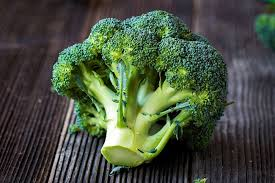

JESTES BROKULEM
 Brokul jest krol warzyw jak lew jest krol dzungli
Brokuly to symbol warzyw
nie dosc ze sa ladne, jak male drzewko
To jeszcze super smaczne i pozywne
Jestes osoba otwarta, szczera, lojalna i mega madra
Kazdy powinien byc jak Ty i brac z ciebie przyklad
Nie zmieniaj sie! Brokul run the world!